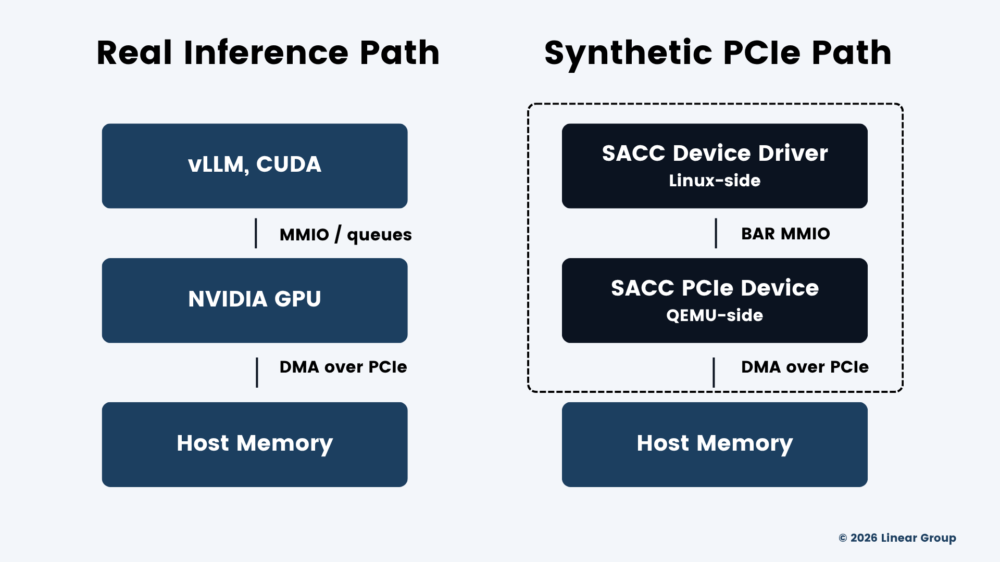
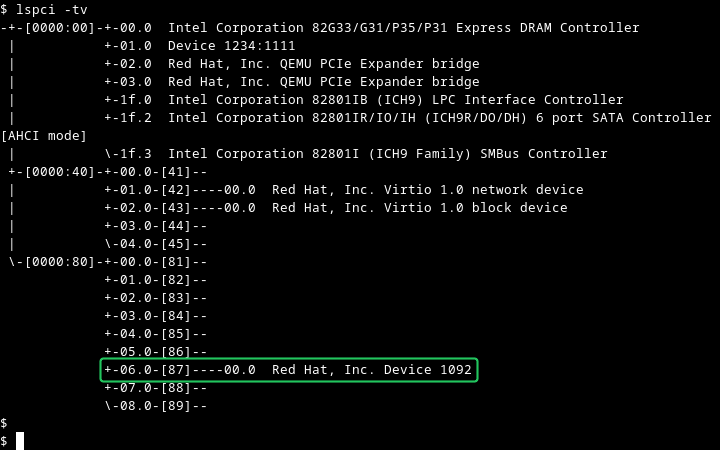

SACC: A Synthetic PCIe Accelerator
During LLM decode, where does the Linux kernel spend time? I recently found that vLLM inference rarely calls ioctl() through the kernel to the GPU. GPUs route around the kernel using buffers and doorbells over PCIe. NVIDIA is closed-source, and chip fabs are expensive. So I built a synthetic PCIe accelerator (spec + both halves) to get a better look.
Profiling decode
To profile inference, I started with strace on a VM while vLLM served Qwen 2.5 7B. To ensure a decode workload, I used short input lengths and long outputs.
$ vllm bench serve --model /home/jnros/models/qwen2.5-7b-fp8 \
--dataset-name random --random-input-len 32 --random-output-len 2000 \
--max-concurrency 1 --num-prompts 4 &I expected a storm of ioctl() calls. Instead, across thousands of generated tokens, I found essentially no GPU-generated syscalls. Kernel time went to futex, epoll_wait, and poll. Waiting and coordinating, not moving data.
$ strace -c -f -p $(pgrep -f EngineCore) -o ~/decode_strace.txt
% time seconds usecs/call calls errors syscall
------ ----------- ----------- --------- --------- ----------------
49.40 50.334147 550 91501 15655 futex
32.50 33.114890 726 45567 epoll_wait
12.52 12.758253 565 22561 poll
4.20 4.281347 69053 62 epoll_pwait
0.94 0.958418 73724 13 10 restart_syscall
0.17 0.176046 8 21320 getpid
...
0.01 0.008825 8825 1 ioctl
0.00 0.002269 34 65 recvfrom
0.00 0.001821 29 62 io_uring_enter
0.00 0.000097 48 2 clock_nanosleepSo NVIDIA's driver must submit CUDA kernel launches through userspace-mapped command buffers and doorbells. From the procfs entry for the vLLM EngineCore process:
$ grep -iE "nvidia|nvidiactl|/dev/nvidia" /proc/32312/maps
200200000-200400000 rw-s 00000000 00:05 647 /dev/nvidia0
200400000-203400000 rw-s 00000000 00:05 646 /dev/nvidiactl
206000000-206200000 rw-s 00000000 00:05 646 /dev/nvidiactl
206200000-206400000 rw-s 00000000 00:05 646 /dev/nvidiactl
206400000-206600000 rw-s 206400000 00:05 648 /dev/nvidia-uvm
<continued for cutlass and nvidia-uvm>These are CPU virtual mappings to the driver's control plane and GPU MMIO. The inverse runs through IOMMU, where the GPU DMAs into host memory. The kernel sets up the mappings and gets out of the way.
The good stuff sits one layer down with PCIe. The doorbell ring is an MMIO write that becomes a PCIe posted write (MWr TLP) to the GPU's BAR. Multi-GPU inference and peer-to-peer (RDMA, disagg, storage) depend heavily on PCIe topology and ACS settings.
SACC

So I created SACC: Synthetic PCIe Accelerator, for instrumenting kernel-bypass submission paths from both sides. Device model and kernel driver. Spec and code: github.com/jnros/sacc.
NVIDIA's stack is proprietary and enormous. (Like a moat!) I need to chase doorbell mechanisms and debug RDMA across different topologies. A minimal and inspectable tool for quick iteration. A moat I want to swim in. What better way than to build from both sides?
SACC is a PCIe accelerator with the goal of instrumenting kernel-bypass submission paths (host-device control plane) from both sides: device model and driver. The device model runs in QEMU (underneath the OS). The driver is a Linux kernel module. I wrote a specification first, then coded both halves of it. v0.1 covers device identity, BAR layout, register file, and driver probe/bind. Rings, doorbells, MSI-X, and DMA are next.
Spec notes
I isolated the doorbell to its own 4K page so that userspace can mmap it without exposing registers. I used an NVMe-style phase bit for completion ownership, which means the driver never writes to the completion ring. Ownership rules and memory barrier obligations are written into the document.
The spec exercise alone is worth the effort for PCIe understanding, but the satisfaction comes from seeing your device for the first time.
Seeing the device

Topology as a parameter
QEMU surprised me all around. It's not just the second half of KVM. Open source, approachable, enormous breadth of capabilities. I built SACC to show up behind a root port on q35, mirroring the way a GPU shows up to the OS. QEMU allows for quick spin-up of arbitrary topology from command-line arguments. Linux treats the result no differently than physical reality.
Want an additional PCIe root complex? Great. How about 5? Three nested switches with storage, network, and SACC devices scattered throughout? Linux took every bonkers topology I fed it, walked the buses, enumerated the devices, and booted quickly.
Network fabric moves from expensive fixed constraint to iterative parameter. Next, I'll tackle NUMA.
Implications
These pieces form an instrument: a device whose behavior I define, in a fabric whose topology I define, driven by a driver I wrote. For anyone looking to juggle a QEMU codebase next to a kernel codebase: highly recommended.
Next up, I plan to build rings and doorbells, RDMA at link speed I control, sensitivities across topologies, and driver bring-up for hardware I don't have.